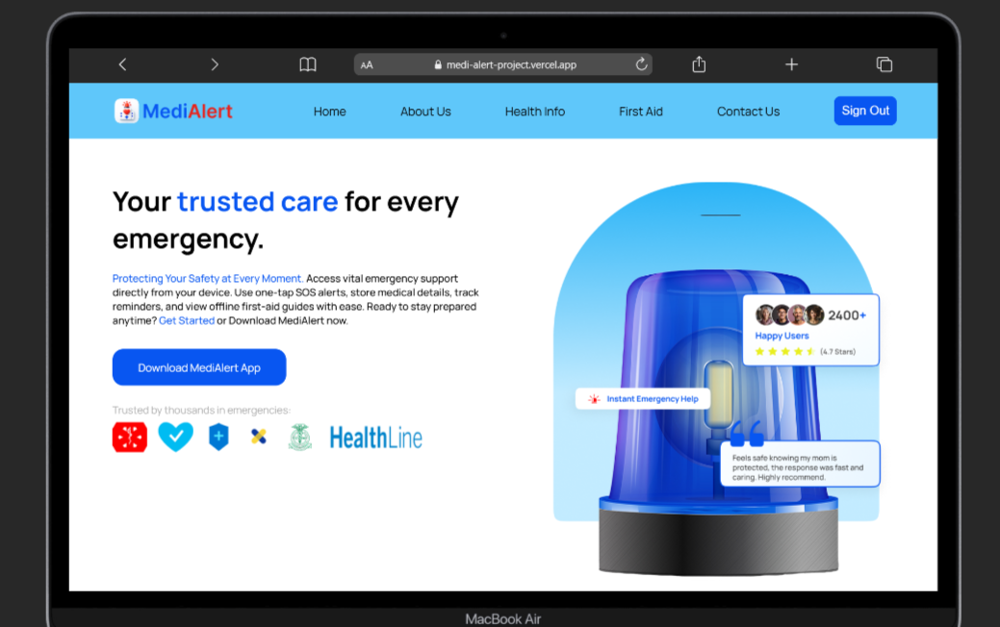

Hi, I'm
Success Esohe
Success Esohe
Osarumwense
Product Designer and Frontend Developer
I design intuitive digital experiences and build responsive web applications that solve real-world problems.
Open to work
About
From biotech to product design
A scientific background, applied to interfaces.
Based in Benin City, Nigeria, I hold a B.Sc. in Plant Biotechnology from the University of Benin and have transitioned into product design and front-end development. My scientific background has strengthened my analytical and problem-solving skills, which I now apply to understanding user needs and designing thoughtful digital experiences.
I'm passionate about creating simple, accessible, and user-centred products that solve real problems. I enjoy taking ideas from problem definition and user flows through to intuitive interfaces and bringing them to life with code.
Product Design
- Figma
- Canva
- Wire-framing
- Prototyping
- User Research
Frontend
- HTML5 & CSS3
- JavaScript
- Responsive Design
- Firebase
- Git / GitHub
Operations
- CRM Tools
- Data Entry
- Microsoft Office
- Google Workspace
- Documentation
Selected projects
Projects
Two products, two different problems.
One finished, one in progress.
Each case study covers the problem, the process, and the interface that came out of it.
Kolovest interface screens go here once exported from Figma
PROJECT — 02 / PRODUCT DESIGN
Case study in progress
Kolovest
It is a goal-based savings app that helps users save toward multiple goals, their way.
Career so far
Experience
Mathematics Teacher
Jan 2026 – May 2026ISNO Education Center, Edo State, Nigeria.
- Taught mathematics to junior secondary school students.
- Prepared lesson plans and instructional materials.
- Assessed students' progress and provided academic support.
- Created an engaging learning environment to improve students' understanding of mathematical concepts.
Data Entry Specialist
Jan 2023 – Mar 2023VIISAUS Limited, Benin City, Edo State. Nigeria.
- Collected and accurately entered voter data during the 2023 Nigerian Presidential election.
- Verified voter information through telephone interactions to ensure data accuracy and completeness.
- Collaborated with team members to maintain data quality and meet reporting deadlines.
Industrial Training (Research/Laboratory Assistant)
Jan 2022 – Jun 2022Nigerian Institute for Oil Palm Research (NIFOR), Edo State. Nigeria.
- Assisted in tissue culture and plant biotechnology research.
- Supported data collection, documentation, and laboratory record keeping.
- Participated in crop acclimatization and greenhouse activities.
- Contributed to research reporting and laboratory operations.
Continued learning